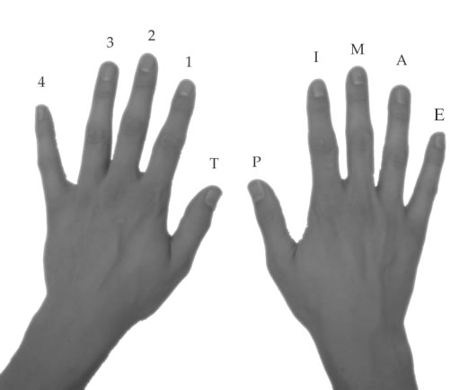
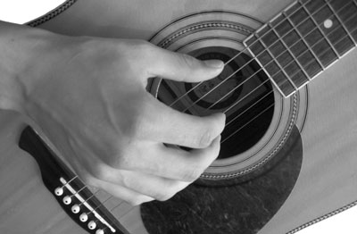
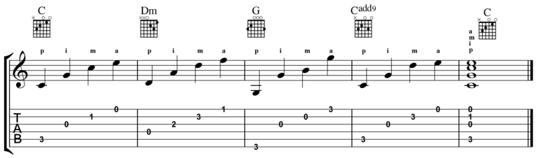
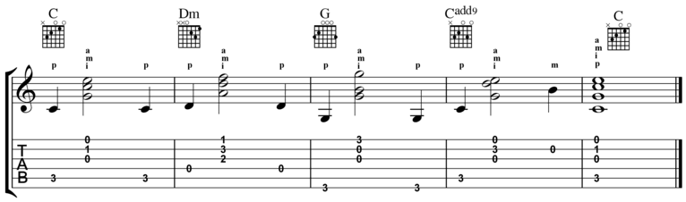

Picking Hand Finger Names
| English |
Spanish |
Abbreviation |
Strings Plucked |
| Thumb |
Pulgar |
p |
4, 5, 6 |
| Index |
Indice |
i |
3 |
| Middle |
Medio |
m |
2 |
| Ring |
Anular |
a |
1 |
| Pinky |
Extremo |
e or c |
not used |

Hand Position
When playing fingerstyle, position your hand so the fingers are perpendicular to the strings so you can strike the stings easily. To do this, the thumb should be in-front of the fingers (closer to the headstock). This hand positioning is very important for several fingerstyle techniques.

Exercise 1 – Fingerstyle Arpeggio
In this example, the chord is played as an arpeggio. This means that the chord is played one note at a time instead of at the same time. This exercise will help you play some basic finger picking patterns. Focus on using the fingerings given above the staff.
When picking, try not to pull the strings away from the fretboard so they pop. Though, this is sometimes used for a percussive effect, it is not usually a desired sound.

Exercise 2 – Chordal Finger Picking
In this exercise, we will play multiple strings at the same time.

Exercise 3 – Brushing
This exercise focuses on the technique of brushing your fingers across multiple strings. To execute this with your index finger, use the face of your fingernail (the part that people use nail polish on) and brush it against the strings by straightening your finger. Your finger should fully extend and point towards the floor when you complete the brushing motion.
In the exercise below, you will execute a brush stroke on beat 2 of the first four measures by brushing strings 3, 2, and 1 (in that order).